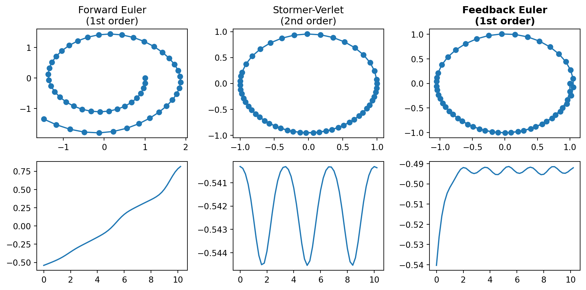
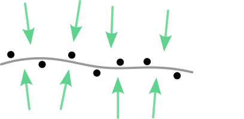
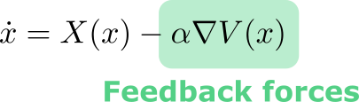
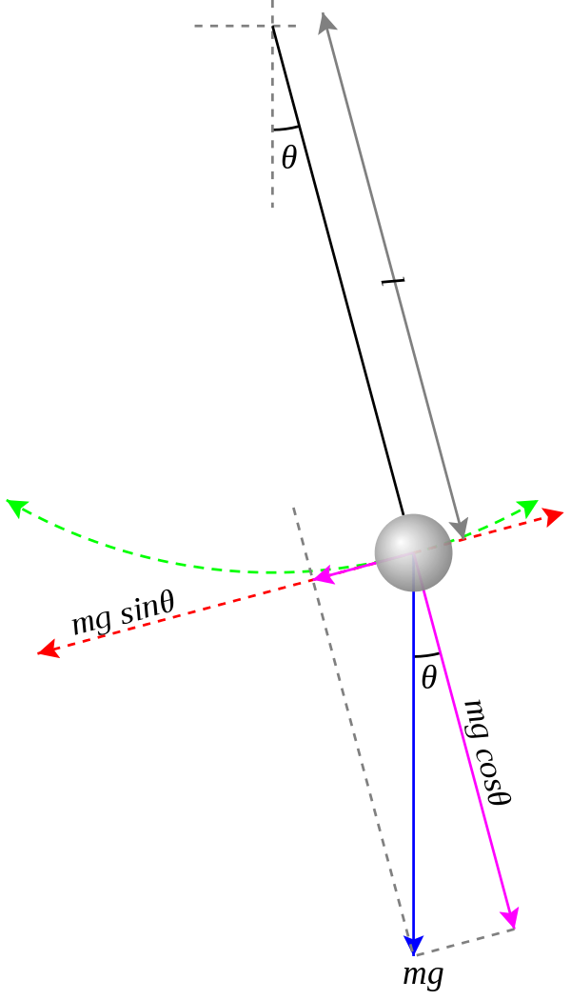
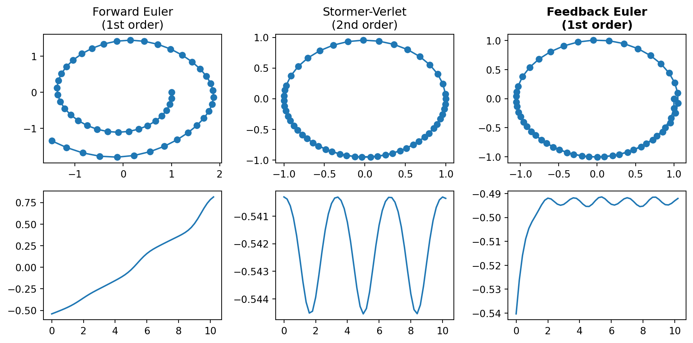
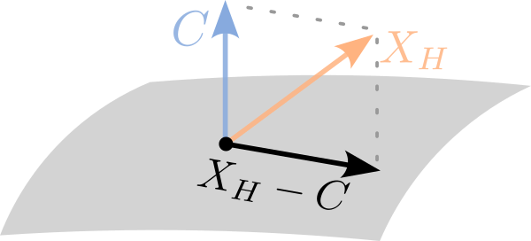
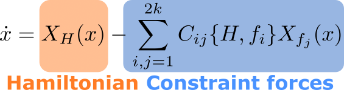
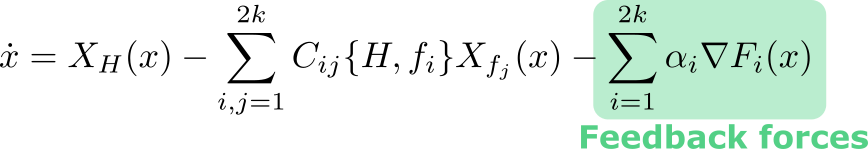
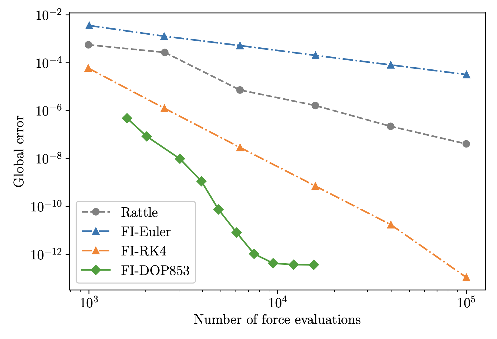

Work done in collaboration with Dong Eui Chang (KAIST, Korea) and Matthew Perlmutter (Universidade Federal de Minas Gerais, Brazil)
Published as Feedback Integrators for Mechanical Systems with Holonomic Constraints, D. E. Chang, M. Perlmutter, J. Vankerschaver. Sensors 22, no. 17 (2022).
Ingredients:
Problem: Numerical dynamics will drift away from \(V^{-1}(0)\).
Feedback approach: Make \(V^{-1}(0)\) into an attracting invariant manifold (approximately conserved).

Add restoring force and consider

Under modest assumptions,
Now, use any standard integrator to numerically integrate the modified vector field.

Conserved quantity: \[ V = \frac{1}{2} \Big(H(q, p) - H(q_0, p_0)\Big)^2 \] with \(H(q, p) = \frac{1}{2} p^2 - \cos(q)\) the Hamiltonian.
Feedback dynamics:

Feedback Euler = forward Euler applied to feedback equations. Comparable behavior to Stormer-Verlet.
Suppose that we have \(2k\) holonomic constraints \(f_j(x) = 0\).
 
Add feedback forces to attract the dynamics back to the constraint surface:

4 conserved quantities to consider:
Just a big vector field…

Done!
Need a higher-order method? Just choose a higher-order integrator.
#| standalone: true
#| viewerHeight: 600
from shiny import App, reactive, render, ui
import matplotlib.pyplot as plt
import numpy as np
import sympy as sp
from scipy.integrate import solve_ivp
from symbolic import q, p, derived_C, X_full_feedback, to_function
METHODS = ["RK45", "RK23", "DOP853", "Radau", "BDF", "LSODA"]
# TODO hardcoded
q0 = (0, 2**0.5/2, 2**0.5/2)
p0 = (1, -3, 3)
app_ui = ui.page_fluid(
ui.panel_title(
ui.h2("Feedback integrator playground"),
),
ui.layout_sidebar(
ui.panel_sidebar(
ui.input_text("H", "Hamiltonian", value="(px**2 + py**2 + pz**2)/2"),
ui.input_text("C1", "Constraint", value="x**2 + y**2 + z**2 - 1"),
ui.input_slider("k1", "Feedback gain (Energy)", value=50, min=0, max=100),
ui.input_slider("k2", "Feedback gain (Constraint 1)", value=50, min=0, max=100),
ui.input_slider("k3", "Feedback gain (Constraint 2)", value=50, min=0, max=100),
ui.input_select("method", "Integration method", METHODS),
),
ui.panel_main(
ui.navset_tab(
ui.nav(
"Plots",
ui.output_plot("conservation_laws_plot"),
),
ui.nav(
"Vector fields",
ui.output_text("vector_field"),
),
ui.nav(
"Solver diagnostics",
ui.output_text("diagnostics"),
),
),
),
),
)
def server(input, output, session):
@reactive.Calc
def run_solver():
H = sp.sympify(input.H())
C1 = sp.sympify(input.C1())
C2 = derived_C(H, input.C1())
Xff = to_function(X_full_feedback(H, C1, C2, input.k1(), input.k2(), input.k3(), q0, p0))
t_eval = np.linspace(0, 10, 100)
result = solve_ivp(lambda t, y: Xff(y), [0, 10], q0 + p0, t_eval=t_eval, method=input.method())
return result
@output
@render.text
def vector_field():
H = sp.sympify(input.H())
C1 = sp.sympify(input.C1())
C2 = derived_C(H, input.C1())
X = X_full_feedback(H, C1, C2, input.k1(), input.k2(), input.k3(), q0, p0)
return f"{X}"
@output
@render.plot
def conservation_laws_plot():
result = run_solver()
h_fun = sp.lambdify([q + p], input.H())
C1_fun = sp.lambdify([q + p], input.C1())
C2 = derived_C(input.H(), input.C1())
C2_fun = sp.lambdify([q + p], C2)
h_data = np.array([h_fun(pt) for pt in result.y.T])
h_data -= h_data[0]
c1_data = np.array([C1_fun(pt) for pt in result.y.T])
c2_data = np.array([C2_fun(pt) for pt in result.y.T])
fig, axes = plt.subplot_mosaic([["A", "A", "A"],
["B", "C", "D"]])
axes["A"].plot(result.t, result.y[0])
axes["A"].plot(result.t, result.y[1])
axes["A"].plot(result.t, result.y[2])
axes["A"].set_title("Trajectory")
axes["B"].plot(result.t, h_data)
axes["B"].set_title("Energy Error")
axes["C"].plot(result.t, c1_data)
axes["C"].set_title("Constraint 1 Error")
axes["D"].plot(result.t, c2_data)
axes["D"].set_title("Constraint 2 Error")
return fig
@output
@render.text
def diagnostics():
return f"Function evaluations: {run_solver().nfev}"
app = App(app_ui, server)
## file: test_symbolic.py
import pytest
import sympy as sp
from symbolic import delta, dot, X_full, derived_C, to_function, eval_at
def test_conservation():
H = sp.sympify("(px^2 + py^2 + pz^2)/2 + (x^2 + y^2 + z^2)/2")
C1 = sp.sympify("x^2 + y^2 + z^2 - 1")
C2 = derived_C(H, C1)
X = X_full(H, C1, C2)
assert sp.simplify(dot(X, delta(H))) == 0
assert sp.simplify(dot(X, delta(C1))) == 0
# Checking the conservation of C2 requires using the constraints
# themselves. I don't know how to do that, so we fall back on just
# substituting a point on the constraint surface and verifying that we get
# 0.
pt = (0, sp.sqrt(2)/2, sp.sqrt(2)/2, 5, -3, 3)
assert eval_at(dot(X, delta(C2)), pt) == pytest.approx(0)
def test_to_fun():
H = sp.sympify("(px^2 + py^2 + pz^2)/2 + (x^2 + y^2 + z^2)/2")
C1 = sp.sympify("x^2 + y^2 + z^2 - 1")
C2 = derived_C(H, C1)
X = X_full(H, C1, C2)
X_fun = to_function(X)
pt = (0, 2**0.5/2, 2**0.5/2, 5, -3, 3)
assert X_fun(pt) == pytest.approx(
[5.0, -3.0, 3.0, 0.0, -30.40559, -30.40559])
## file: symbolic.py
"""Symbolic computations with functions of (q, p)."""
import sympy as sp
q = x, y, z = sp.symbols("x, y, z")
p = px, py, pz = sp.symbols("px, py, pz")
# Primitives
def delta_q(f):
return [sp.diff(f, v) for v in q]
def delta_p(f):
return [sp.diff(f, v) for v in p]
def delta(f):
return delta_q(f) + delta_p(f)
def dot(v1, v2):
return sum(v*w for (v, w) in zip(v1, v2))
def plus(v1, v2):
return [v+w for (v, w) in zip(v1, v2)]
def minus(v1, v2):
return [v-w for (v, w) in zip(v1, v2)]
def times_scalar(X, ell):
return [v*ell for v in X]
def poisson(f1, f2):
return dot(delta_q(f1), delta_p(f2)) - dot(delta_q(f2), delta_p(f1))
# Mechanics
def derived_C(H, C1):
C2 = dot(delta_q(C1), delta_p(H))
return C2
def X(f):
X_q = [poisson(v, f) for v in q]
X_p = [poisson(v, f) for v in p]
return X_q + X_p
def X_constraint(H, C1, C2):
C12 = 1/poisson(C1, C2)
H_C1 = poisson(H, C1)
H_C2 = poisson(H, C2)
X_q = [-C12 * (-H_C1 * poisson(v, C2) + H_C2 * poisson(v, C1)) for v in q]
X_p = [-C12 * (-H_C1 * poisson(v, C2) + H_C2 * poisson(v, C1)) for v in p]
return X_q + X_p
def X_feedback(H, C1, C2, k1, k2, k3, q0, p0):
delta_H = H - eval_at(H, q0 + p0)
delta_C1 = C1 - eval_at(C1, q0 + p0)
delta_C2 = C2 - eval_at(C2, q0 + p0)
return plus(
times_scalar(delta(H), k1*delta_H),
plus(
times_scalar(delta(C1), k2*delta_C1),
times_scalar(delta(C2), k3*delta_C2)))
def X_full(H, C1, C2):
X_h = X(H)
X_c = X_constraint(H, C1, C2)
return plus(X_h, X_c)
def X_full_feedback(H, C1, C2, k1, k2, k3, q0, p0):
X_fu = X_full(H, C1, C2)
X_fe = X_feedback(H, C1, C2, k1, k2, k3, q0, p0)
return minus(X_fu, X_fe)
# Utilities
def to_function(X):
callables = [sp.lambdify([q + p], v) for v in X]
def fun(args):
return [c(args) for c in callables]
return fun
def eval_at(expr, args):
subs = dict(zip(q + p, args))
return expr.evalf(subs=subs)Take-aways from this talk:
Future work: